Token，正在成为 AI 时代的水和电。
谁能用更少的算力压出更多的 token 效率，谁就能在这场军备竞赛里活得更久。
这也是为什么今年英伟达 GTC 大会的焦点，开始从"谁的卡更多"转向"谁用得更聪明"。
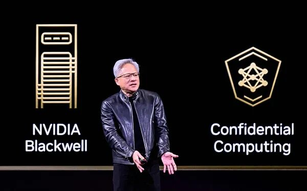
图片来自中国蓝新闻
这就不得不提刚在GTC上演讲的杨植麟了，因为他演讲的一个重要主题就是 Token 效率。
这可能也是老黄请他的原因。
杨植麟这次演讲的主题是《How We Scaled Kimi K2.5》，首次完整披露了 Kimi 下一代模型的技术路线图。他把 Kimi 的进化逻辑概括为三个维度：
Token 效率：用 MuonClip 优化器替代用了 11 年的 Adam，token 效率翻倍 长上下文：Kimi Linear 架构在 128K-1M 上下文范围内，解码速度提升 5-6 倍 智能体集群：引入 Orchestrator 编排器，让多个 Agent 并行协作
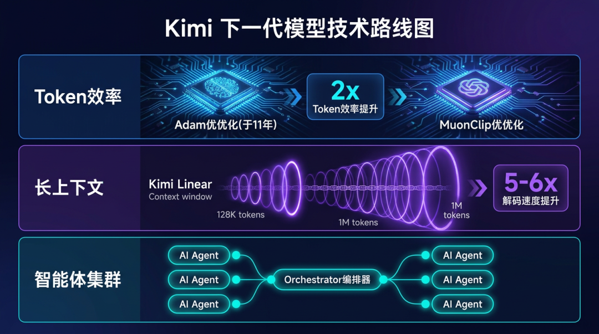
但真正让我注意到的，是他在演讲里提到的第三项底层创新：「Attention Residuals」。
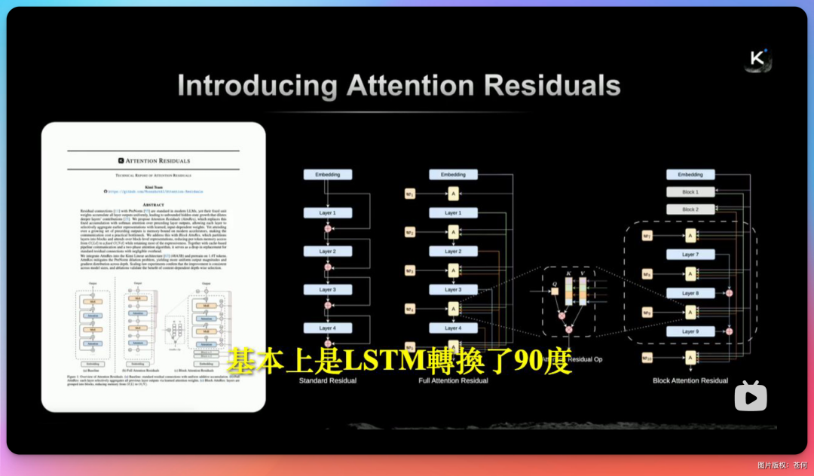
因为就在 GTC 前两天，我看到 Kimi 刚发了这篇论文。而马斯克转发后直接说了句：「Impressive work from Kimi」。
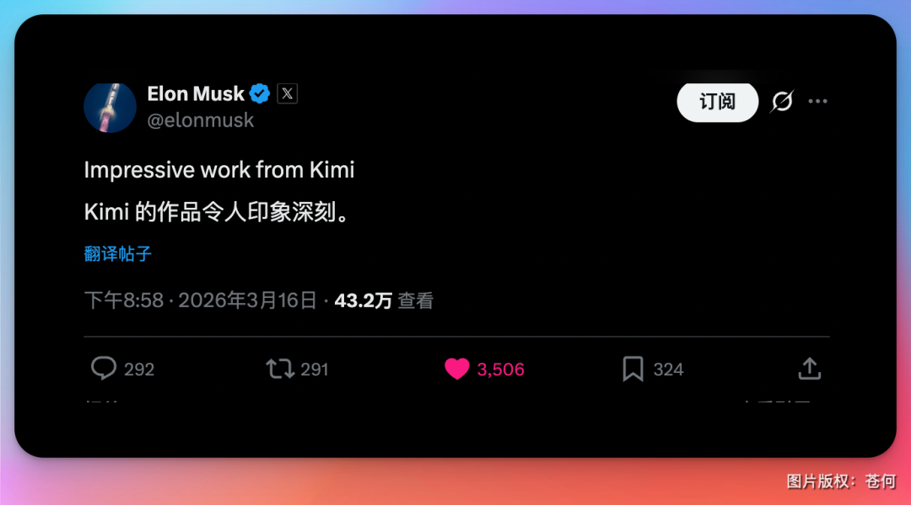
Karpathy 看完也半开玩笑地说：我们是不是没把「Attention is All You Need」这句话理解透。
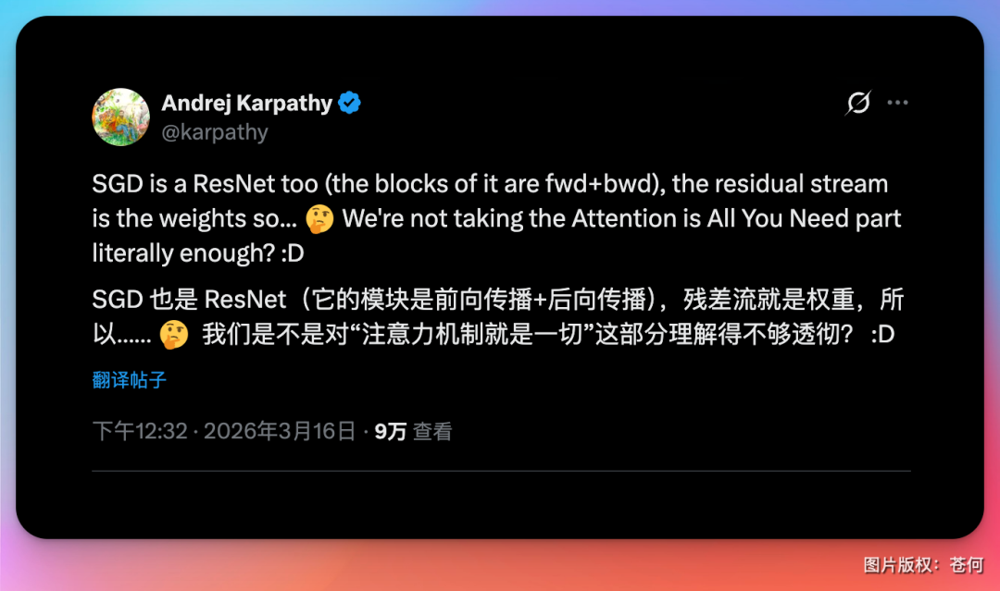
一篇改残差连接的论文，怎么就让这帮人集体激动了？我去读了下。
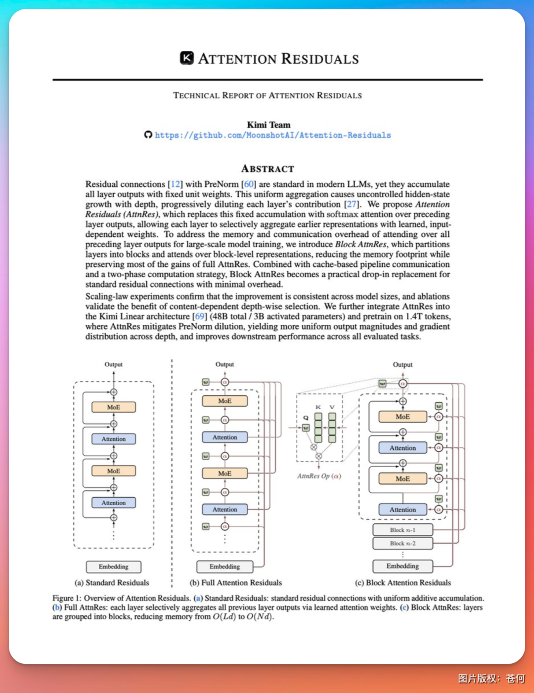
论文我也下载下来了，私信回复暗号即可获取：Attention_Residuals
主角我居然还挺熟——残差连接。
简单说下残差连接是什么。
2015 年 ResNet 提出了一个极其简单的操作：每一层的输出 = 上一层传下来的东西 + 这一层自己算出来的东西。就是一个加法。
这个加法让深层网络成为可能，也让后来的 Transformer 站稳了脚跟。从 2015 年到现在，几乎所有大模型都在用它，权重恒定为 1，所有层一视同仁。
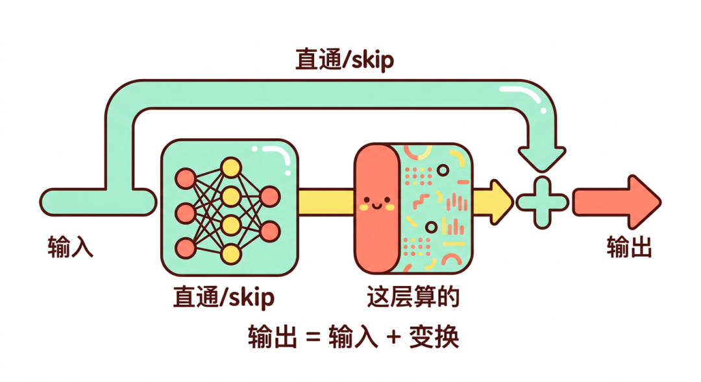
问题在哪？
打个比方：一个学生上了 40 节课，期末复习的时候把所有笔记等量堆在一起看——不管哪门课跟考试相关，每门课都占同样的复习时间。
结果就是：
早期学到的重要内容，传到深层已经被稀释得差不多了
后面的层想产生影响，得"喊"得比前面所有层加起来还大声
研究甚至发现，很多大模型里相当一部分层可以直接删掉，性能几乎不受影响
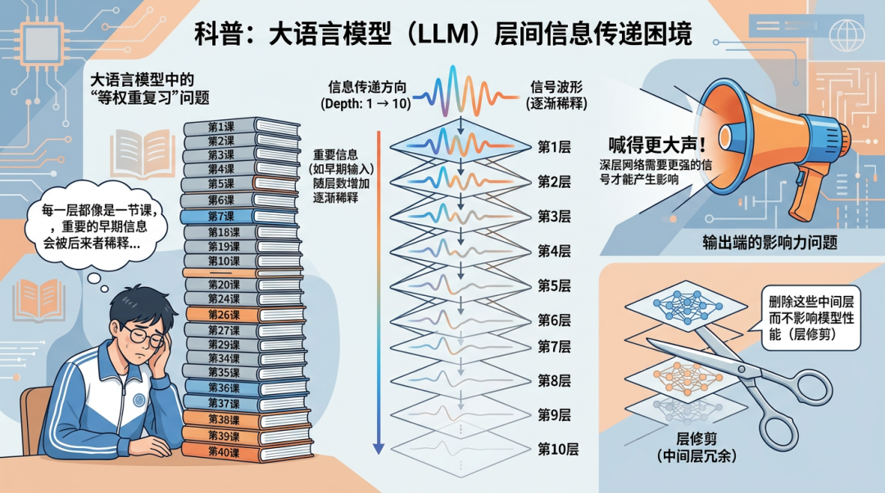
用了十年没人动，不是因为它完美，是因为"够用"让人失去了追问的动力。
DeepSeek 去年底发了篇论文（mHC），核心思路是：既然固定权重太死板，那就让权重变成可学习的，让模型自己决定怎么混合各层的信号。
DeepSeek 在残差连接基础上改进的 mHC（流形约束超连接） 架构，解决了 Hyper-Connections 的训练不稳定问题，同时保持表达能力，并在 3B/9B/27B 规模模型上验证了效果。
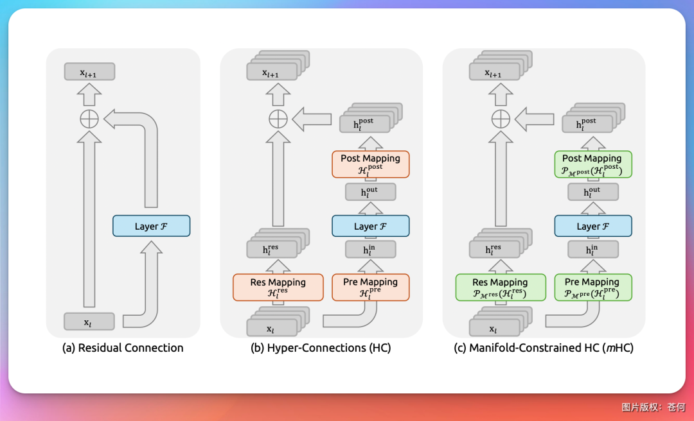
这个方向是对的，但有一个局限：权重训练完就固定了，不管输入是什么，每一层拿到的混合方式都一样。
Kimi 团队这篇论文问了一个更往下的问题：就算权重可以学，每一层拿到的依然是"混合过的状态"。它没有办法说"我要单独看第 3 层的输出"。
信息一旦被搅进累积状态，就找不回来了。
Kimi 的解法，来自一个很漂亮的类比。
把 Attention 旋转 90 度
Transformer 处理文本的时候，用注意力机制让每个词可以"回头看"前面所有的词，根据内容动态决定关注哪里。这是横向的——在序列维度上。
Kimi 团队在思考：那层与层之间，为什么不能做同样的事？
把注意力机制"旋转 90 度"——从序列维度转向深度维度。
改完之后，每一层拥有一个可学习的查询向量（query），用它对所有前序层的输出做 attention。哪些层对当前计算更重要，权重就更高；不相关的层，权重自动降低。
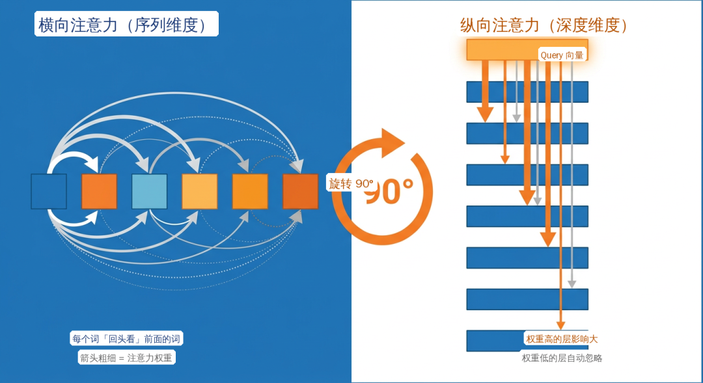
回到复习的比喻：现在这个学生有了一套智能系统：做每道题之前，系统根据题目内容自动从 40 节课的笔记里挑出最相关的几份重点看。
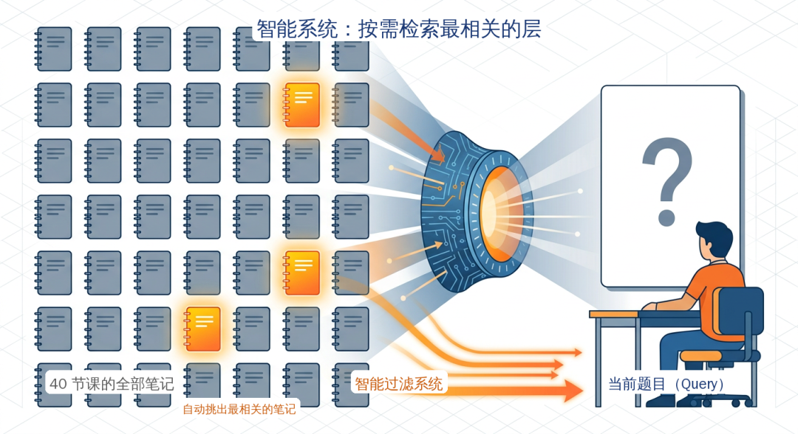
最关键的一点：这个权重是动态的。同一个模型，处理不同的输入，每一层对前序层的关注程度完全不同——实时决定，而非训练完就固定。
Ilya 说过，LSTM 旋转 90 度就是 ResNet。现在 Kimi 证明，Attention 也可以旋转 90 度。
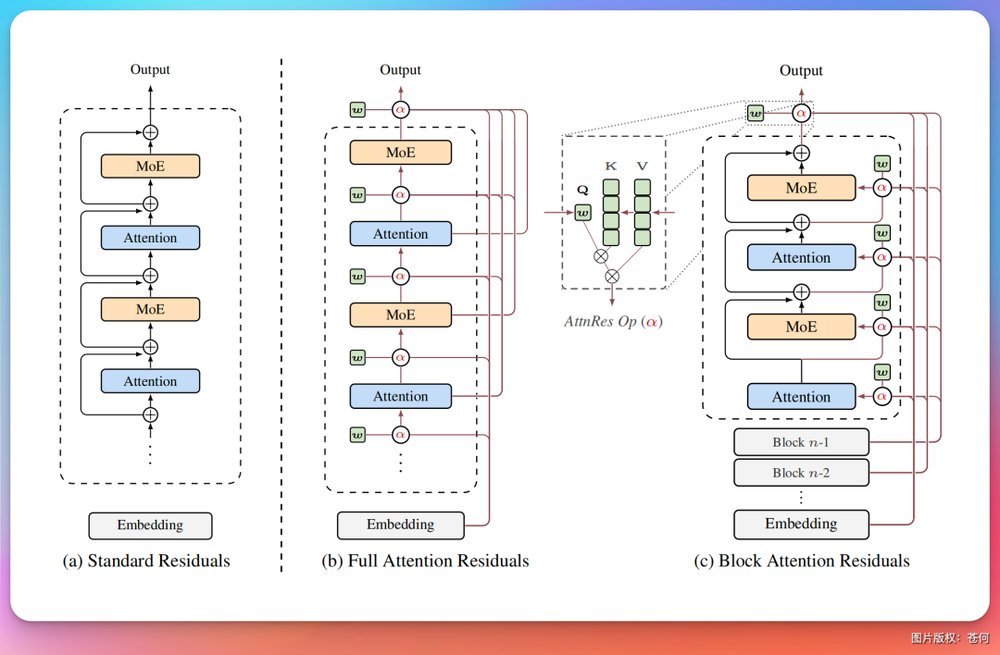
效果：等效白赚 25% 算力
工程上，Kimi 把模型分成约 8 个 block，块内用传统残差，块间做 attention。推理延迟增加不到 2%，几乎免费。
在自家 48B 参数模型（Kimi Linear，3B 激活参数）上验证：
GPQA-Diamond（科学推理）：+7.5 分
Math（数学）：+3.6 分
HumanEval（代码）：+3.1 分
同等算力下性能更好；反过来说，达到同等性能需要的训练预算减少约 20%。相当于不加机器、不加数据，只改信息流结构，白赚 25% 的算力效果。
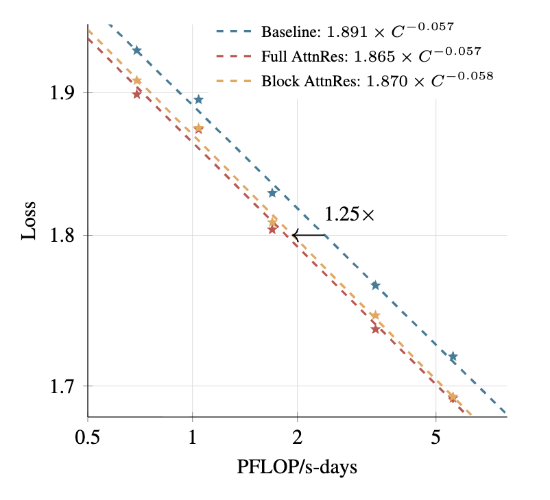
写在最后
这几年大模型的竞争，表面上是参数量、数据量、卡的数量在比拼。
但 GTC 的风向已经变了.
黄仁勋自己也清楚，光靠堆算力的时代正在见顶。
他需要在台上展示的，是"聪明地用算力"的人。
杨植麟带来的三项底层创新: MuonClip、Kimi Linear、Attention Residuals。
恰好都在回答同一个问题：
怎么用更少的资源做出更好的模型。
Adam 用了 11 年，Attention 用了 8 年，残差连接用了 10 年。
这些东西不是不能动，是大部分人默认了"不需要动"。
当所有人都在想怎么买更多的卡，有人在想怎么让每张卡的每个 token 都更值钱。
这才是黄仁勋真正想让世界看到的。
过去两年，从 DeepSeek 到 Kimi，中国大模型团队动手的位置越来越深。
从训练方法论到核心网络架构，再到最底层的信号传递结构。
大力出奇迹的故事讲了太久了。接下来的竞争，属于那些敢拆「地基」的人。